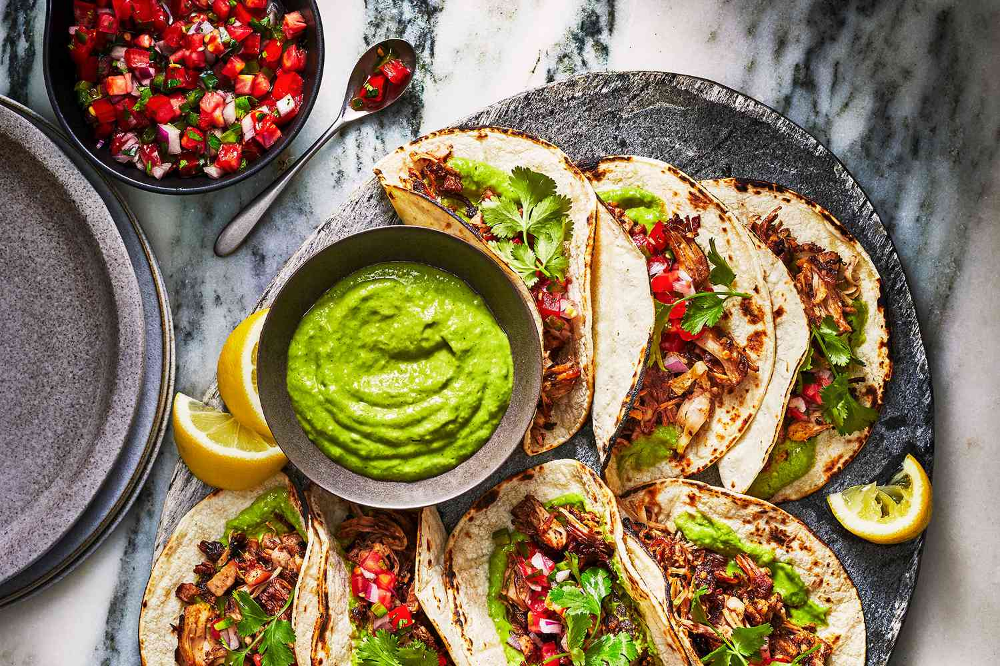

Where your tastebuds will be satisfied

| INDIAN |
CHINESE |
VEGETERIAN |
AFRICAN |
| Indulge in the kaleidoscope of flavors that is Indian cuisine, a culinary journey that tantalizes the taste buds and ignites the senses. Picture a colorful spread, vibrant with the hues of turmeric, saffron, and paprika, each dish a masterpiece crafted with love and tradition. | Embark on a culinary journey through the rich tapestry of Chinese cuisine, where tradition meets innovation, and every dish tells a story of centuries-old culinary mastery. From the bustling streets of Beijing to the tranquil tea houses of Hangzhou, each region offers a unique flavor profile that delights the senses and leaves you craving more. | Embark on a culinary journey through the colorful and diverse world of vegetarian cuisine, where fresh produce, aromatic herbs, and exotic spices come together to create dishes that are as nourishing as they are flavorful. From the verdant fields of Italy to the bustling markets of India, vegetarian fare spans the globe, offering a feast for the senses that delights both body and soul. | Embark on a culinary safari through the vibrant and diverse flavors of African cuisine, where each dish tells a story of rich traditions, bold spices, and the bounty of the land. From the sun-drenched savannas of East Africa to the bustling markets of West Africa, the continent's culinary tapestry is as vast and varied as its landscapes. |
 |
 |
 |
 |